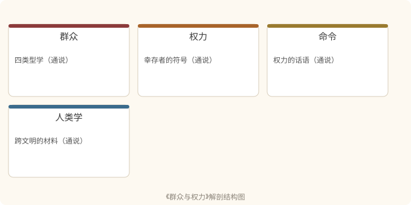

群众与权力
一、基本信息
| 作者 | 埃利亚斯·卡内蒂 |
|---|---|
| 成书/出版 | 1960年（Britannica B312：Masse und Macht (1960)——'His major work'） Isaac Bashevis Singer — Encyclopaedia Britannica 与 Elias Canetti — Encyclopaedia Britannica（百科全书） |
| 国别/地区 | 奥地利 |
| 时代 | 现当代 · 20世纪60年代 |
| 体裁 | 论著 |
| 语言 | 德语 |

《群众与权力》解剖结构图（主题·结构图）
二、创作背景
Britannica（B312）：Masse und Macht (1960)——'His major work'（其巨著）。
Britannica（B312）：卡内蒂——1981诺奖（与布罗赫并列条目口径——covers: singer, canetti）。
题材（通说待核）：群众的类型学与权力的象征——人类学式的政体解剖。
三、内容脉络
（通说待核）群众四类型：环形/开放/猎捕/内聚（分类通说待核）。
（通说待核）权力的想象学：幸存者与命令。
四、主要人物表
| 人物 | 身份 | 说明 |
|---|---|---|
| （论著无人物） | —— | 人类学式论著 |
五、主题与艺术特点
- 群众心理学（B312：major work 定位）。
- 权力的符号学（通说待核）。
- 幸存者作为权力原型（通说待核）。
六、影响与评论
- Britannica：'His major work'（B312）。
Isaac Bashevis Singer — Encyclopaedia Britannica 与 Elias Canetti — Encyclopaedia Britannica（百科全书） - Britannica：1981诺奖交叉（B312 口径）。
Isaac Bashevis Singer — Encyclopaedia Britannica 与 Elias Canetti — Encyclopaedia Britannica（百科全书）
七、阅读建议
难点
- 人类学式的分类体系。
- 多文明材料的并置。
- 《群众与权力》中译本（广西师大等——通说待核）。
- 德文原版。
卡内蒂首选；与《迷惘》对读。
八、待核实
- 群众分类术语核对（通说）。
- 1960年出版（Hanser说）待核。
- 诺奖授奖词引用待核。